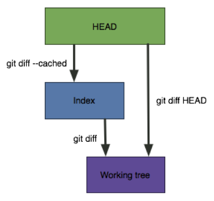
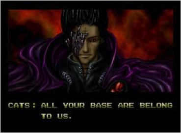

All Things Git
Git, GitHub, Git Hooks & More
Alex DiLiberto
Version Control?
git
- 2005
- Linus Torvalds
- Open source
- Distributed version control
“Open source is the only right way to do software.”
Why should I care?
- Community adoption
- Decentralized
- Performance
- Data assurance
- Free/open source
Time to shift our thinking
SVN
Git
Basic Commands
init, clone, add, commit, log, status
Branching
$ git commit -m 'initial commit of my project';
$ git commit -m 'fixed bug #1328...';
$ git commit -m 'add feature #32...';
Branch - simply a lightweight movable pointer to a single commit.
$ git branch testing;
Merge vs Rebase
What happened here?
Merge vs RebaseAlso...
git pull --rebase
Git on the Server
- Simple Bare Repository
- Quick
- Github
- User centric hosted solution
- GitLab/Phabricator
- Self hosted
- Gitolite
- Access control layer sits on top of git
- Single UNIX hosting user / Many “virtual” users
- Simple yet powerful
- Security with SSH based authentication
Lightweight
Transparent
Scalable
Workflows
Gitflow
gem install gitflow
Forking
.git/hooks
pre-commit
post-commit
pre-rebase
post-checkout
post-merge
pre-receive
post-receive
update
Things we didn't cover in detail
$ git diff

$ git (revert|reset)
- Tagging
- Git Config
- user.name / user.email
- Branch traversal and detached HEAD state
- Ancestors and Commit Ranges
$ git show HEAD^$ git show feature~3$ git log origin/master..HEAD
- Undoing Changes
$ git revert HEAD~2$ git reset HEAD^
$ git stash- Remote branches
- ReFlog
Do's, Don'ts, & Best Practices
Commit often, Perfect later, Publish once
Branch early, branch often
Use your scratch pads
Don't panic
git reflog, git fsck, git stash
Do follow a workflow
Do write useful commit messages
Don't rewrite (public) history
All Your Rebase
git pull –rebase
git rebase –i
Do enforce standards
hooks, testing, proper commit messages, workflows, merging vs rebasing, and more
Do Backup
$ git bundle create /tmp/my-project.backup --all
References
http://en.wikipedia.org/wiki/Git_(software)
http://www.vogella.com/articles/Git/article.html
http://whygitisbetterthanx.com
http://nvie.com/posts/a-successful-git-branching-model/
http://css.dzone.com/articles/all-git-hooks-you-need
http://net.tutsplus.com/tutorials/tools-and-tips/quick-tip-automation-with-git-hooks/
http://lwn.net/Articles/328436/
http://danielkummer.github.io/git-flow-cheatsheet/
http://www.slideshare.net/saharabeara/advanced-git-tutorial
Thanks!
Alex DiLiberto